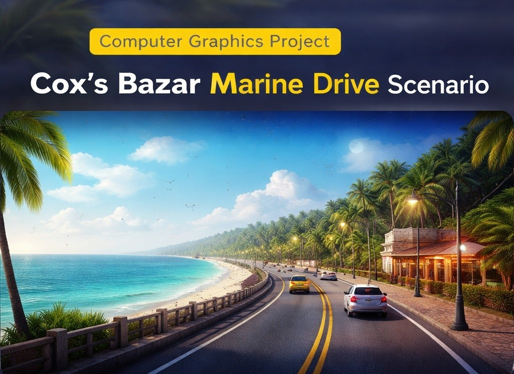
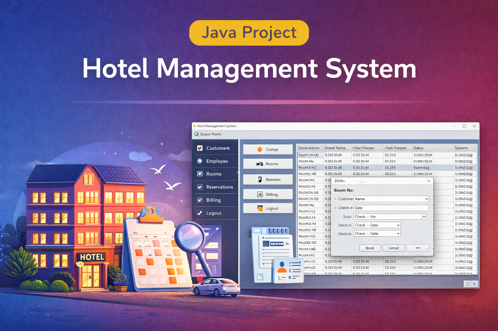

My Projects
NightBite-Latenight Food Delivery System
NightBite Food Delivery System is a C# application that enables users to view food menus, place orders, and manage delivery information efficiently. The system focuses on simplifying the food ordering process.
View Project
MarineDrive Coxs Bazar Senario
A computer graphics project that simulates the Cox’s Bazar Marine Drive environment with animated scenery, dynamic lighting effects, and day–night transitions.
View Project
Hotel Managment
A Java-based Hotel Management System that allows users to manage room bookings, customer information, and hotel services efficiently.
View ProjectAbout Me
I am Nadia Sultana Nazu, a Computer Science and Engineering student currently in my 8th semester at American International University–Bangladesh (AIUB). I have completed courses in C++, Java, Data Structures, Artificial Intelligence, C#, and Computer Graphics. Currently, I am studying Web Technology and developing web-based projects as part of my coursework. I have also participated in academic conferences, including an IEEE conference at Hajee Mohammad Danesh Science and Technology University. My research topic was “Unveiling the Complexities of AI and Human Emotion: Perceived Capabilities, Trust, and Responsible Adoption of Emotion Detection.” Additionally, I participated in another conference held at Mymensingh Engineering College
Contact Me
Contact form will be added later.
Certificates
Academic Certificates

PSC Certificate

JSC Certificate

SSC Certificate

HSC Certificate
Additional Certifications

Web Development Certificate

Java Programming Certificate